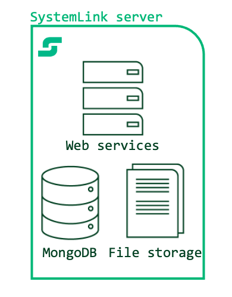
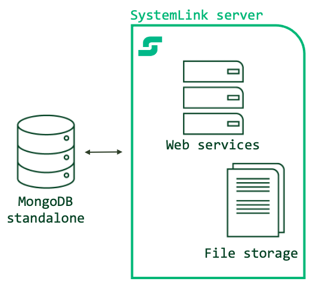
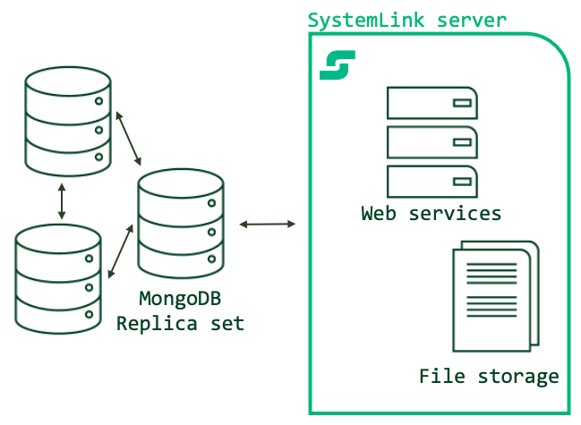
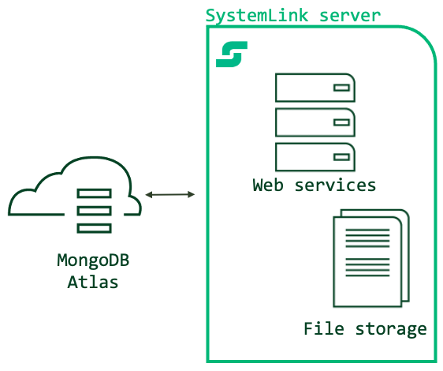

7. MongoDB¶
The majority of SystemLink services use MongoDB as the primary database. Default installations of SystemLink include MongoDB Community Edition, which launches when the SystemLink server boots. This is referred to as a 7.3 single node deployment.
You can also host MongoDB on a separate standalone server, a replica set of three or more servers, or use MongoDB's platform as a service offering, MongoDB Atlas. This is referred to as a 7.4 multi node deployment.
7.1 Assumptions and Prerequisites¶
Before you configure a remote MongoDB instance to use with SystemLink, ensure you have the following:
- A server running SystemLink 2021 R1 or greater. Refer to Installing and Configuring SystemLink Server and Clients for the basics of setting up a SystemLink server.
- A standalone server running MongoDB, multiple servers hosting a MongoDB replica set, or a MongoDB Atlas Account
- A user with the
readWriteAnyDatabaseor similar role. Refer to Role-Based Access Control for details. You reference this user in the MongoDB connection fields or connection string in NI SystemLink Server Configuration.
Important
Due to a bug in a third-party MongoDB driver, SystemLink cannot connect to MongoDB instances where the MongoDB username either the - or the _ character.
7.2 Single Node vs Multi Node MongoDB Deployments¶
The following table summarizes when to use the various supported configurations of MongoDB with SystemLink.
| Diagram | SystemLink + MongoDB Configuration | When to use |
|---|---|---|
|  | Single node with defaults | You have one server hosting both MongoDB and SystemLink. Use this during evaluation, when working with less than 10 managed nodes, and in deployments that don't need the Asset Manager and Test Insights modules. |
| Single node with increased index cache | You have one server hosting both MongoDB and SystemLink. Use this during evaluation, in moderate deployments of less than 25 managed nodes, and for moderate usage of the Test Insights module producing less than 100 test steps and results each day. | |
|  | Multi node with a single standalone MongoDB Instance | You have SystemLink and MongoDB hosted on two separate servers. Use this configuration when the CPU, memory, and disk consumption of the MongoDB Windows service is impacting the operation of SystemLink services. While this configuration provides for greater reliability by splitting the servers running SystemLink and MongoDB, it does not provide greater redundancy for data storage. |
|  | Multi node with MongoDB replica sets | You have one dedicated server hosting SystemLink and three or more servers hosting MongoDB. NI recommends this configuration for all production deployments including small and moderately sized deployments. Use this to enable greater scale (>50 managed nodes, >1000 test steps and results daily). This configuration mitigates data loss with redundant replica sets. Refer to MongoDB documentation for setting up and hosting a MongoDB instance with replica sets. |
|  | Multi node with MongoDB Atlas | You have one dedicated server hosting SystemLink and are connecting to a MongoDB Atlas cluster. Use this configuration for large scale deployments (>200 managed nodes, 10,000 test steps and results daily) or to simplify database provisioning, operation, backup and restore. Refer to MongoDB Atlas for details on this service. |
7.3 Single Node Deployments¶
By default, SystemLink stores all data on locally hosted databases and the local file system. For more reliable data storage and scalability, NI recommends 7.4 remote data stores for all production deployments.
7.3.1 Increasing the index cache size for single node deployments¶
Increase the index cache size to process more data and use the Test Insights or Asset Management modules in a single-node deployment. This avoids high CPU usage that can occur with the default MongoDB memory constraint in SystemLink. NI recommends increasing the available memory for the index to 8GB. Refer to Sizing a SystemLink Server for system requirements to run SystemLink.
- Log into the desktop of the SystemLink server with administrator privileges.
- Open NI SystemLink Server Configuration.
- Navigate to NoSqlDatabase.
- Under The NoSqlServer is launched and managed by SystemLink, adjust the value in The cache size of the database in Gigabytes (GB).
- Click Apply.
7.4 Multi Node Deployments¶
SystemLink supports three types of multi-node configuration. You can configure SystemLink to connect to a standalone instance, replica sets, or MongoDB Atlas.
NI recommends connecting SystemLink to a replica set of three or more MongoDB members or MongoDB Atlas for all production deployments.
- NI does not support configurations where multiple SystemLink servers use the same MongoDB instance.
- NI does not support configurations where another application uses the same MongoDB instance as SystemLink.
- While SystemLink can connect to and use a sharded MongoDB cluster (
mongos), it will not take advantage of horizontal scaling capabilities enabled by sharded clusters. - When using MongoDB Atlas or MongoDB Enterprise Advanced, you can encrypt the data stored within the database.
Connection String Formats
The following connection string formats are unsupported or could cause issues in some environments:
- Connection strings that contain the query parameter
tls=are unsupported. Use thessl=query string to achieve the same degree of security. - In environments where the 4.2.2.1 root DNS server cannot be reached, the DNS seed list URI format (
mongodb+srv://) will fail due to a bug (Unable to connect to Atlas due to DNS connectivity issues #358) in a third-party MongoDB driver. In this case, use the MongoDB standard connection string format to connect your replica set. This affects both self-hosted replica sets and MongoDB Atlas.- The
mongodb+srv://URI format provides for more flexible deployments because clients will not need a new connection string should the servers in the replica set change.
- The
- When URL escaping characters in your connection string, you must use uppercase characters, e.g.
%2Fnot%2f.
Example connection string in the standard connection string format (line breaks for readability):
mongodb://myusername:<password>@
ec2-123-123-12.compute-1.amazonaws.com27017,
ec2-234-234-23.compute-1.amazonaws.com:27017,
ec2-456-456-45.compute-1.amazonaws.com:27017/
?authSource=admin
&replicaSet=rs0
&readPreference=primary
&ssl=true
Consider using MongoDB Compass to connect to your replica set to help construct a valid connection string and verify the configuration.
7.4.1 Connecting to Standalone MongoDB instance¶
Using a separate server to host MongoDB increases reliability and lowers resource utilization for your SystemLink server.
You may use the supplied form input in NI SystemLink Sever Configuration when connecting to a server hosting a single standalone MongoDB instance. Refer to Connecting to a Remote Mongo Database for more information.
7.4.2 Connecting to MongoDB with Replica Sets¶
Use replica sets to create redundancy in your database to mitigate against potential data loss. Refer to MongoDB for a tutorial on deploying replica sets.
Note
NI recommends x.509 certificates for replica set membership.
To successfully connect to a MongoDB replica set and create redundancy, you must specify a connection string in NI SystemLink Server Configuration.
- Log into the desktop of the SystemLink server with administrator privileges.
- Open NI SystemLink Server Configuration.
- Navigate to NoSqlDataBase.
-
Click the Connect to an externally managed NoSqlDatabase server radio button.
Secure remote connections
NI recommends securing communications between your SystemLink server and MongoDB instance with TLS. For details, refer to TLS for Remote MongoDB Instances.
-
Select the Use a custom connection string checkbox.
- Enter your connection string. Refer to Connection String URI Format for details on structuring your connection string.
- Click Test Connection to ensure SystemLink can connect to the MongoDB instance.
- If the connection test was successful, click Apply to restart SystemLink service manager and connect to the MongoDB instance.
7.4.3 Connecting to MongoDB Atlas¶
MongoDB Atlas provides simpler setup and adminstration compared to self hosted replica sets and standalone deployments. MongoDB Atlas is a fully managed PaaS from MongoDB.
If you have not setup an Atlas cluster before, refer to Getting started with Atlas. Refer to Setup Atlas Connectivity for steps to obtain a connection string.
Note
In the sample connection string provided by Atlas you will need to replace the instance of myFirstDatabase with admin. For example:
mongodb+srv://<username>:<password>@<cluster>/myFirstDatabase?retryWrites=true&w=majority
This will need to be updated to
mongodb+srv://<username>:<password>@<cluster>/admin?retryWrites=true&w=majority
MongoDB Atlas free tier is unsupported by SystemLink
Due to memory constraints on the Atlas free tier, you must use a paid tier for SystemLink to successfully connect. SystemLink supports all paid tiers of Atlas. If you need assistance evaluating Atlas with SystemLink please contact NI (customer.requests@ni.com) or your local account manager.
Because Atlas uses replica sets by default, your SystemLink server could be affected by the bug in the third-party MongoDB driver used by SystemLink as described in 7.4 Multi Node Deployments. If you cannot use the mongodb+srv:// URI format, use the connection string generated for the Node.js driver version 2.0.14. This provided connection string is fully supported by SystemLink.